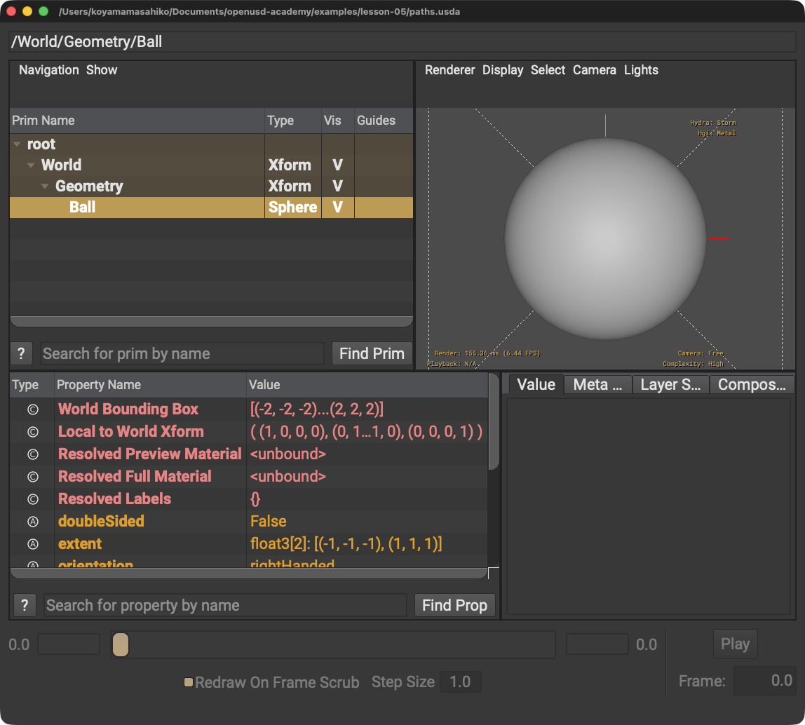

Propertyの前にもスラッシュを書く
/World/Geometry/Ball/radiusではなく、/World/Geometry/Ball.radiusです。
STEP 12 · FOUNDATIONS
スラッシュとピリオドの役割を分けて、対象を正確に指します
今日これだけ
公式情報に基づく説明
Prim PathではPrim名をスラッシュ / で区切ります。pseudo-rootは / です。Property Pathでは、所有するPrimのPathにピリオド . とProperty名を続けます。
USDA
#usda 1.0
def Xform "World"
{
def Xform "Geometry"
{
def Sphere "Ball"
{
double radius = 2
}
}
}引用符内の World、Geometry、Ball がPrim名です。波括弧とインデントが親子関係を示します。radiusはBall Primに属するPropertyです。

/World/Geometry/Ballになります。選択したBallのPropertyは左下に表示されます。Diagram
Python
from pxr import Usd
stage = Usd.Stage.Open("paths.usda")
ball = stage.GetPrimAtPath("/World/Geometry/Ball")
radius = stage.GetAttributeAtPath("/World/Geometry/Ball.radius")
print(ball.GetPath())
print(radius.Get())GetPrimAtPathにはPrim Pathを渡します。GetAttributeAtPathにはProperty Pathを渡します。PythonではPathを引用符で囲んだ文字列として書いています。
USDA → Python mapping
USDA
World → Geometry → Ball↓Python
stage.GetPrimAtPath("/World/Geometry/Ball")USDA
Ballの double radius↓Python
stage.GetAttributeAtPath("/World/Geometry/Ball.radius")Beginner notes
よくある間違い
/World/Geometry/Ball/radiusではなく、/World/Geometry/Ball.radiusです。
絶対Prim Pathはpseudo-rootを表す / から始めます。
Prim名は正確に一致させます。Ballとballを同じものとして扱わないでください。
Glossary
/。Official references
確認日: